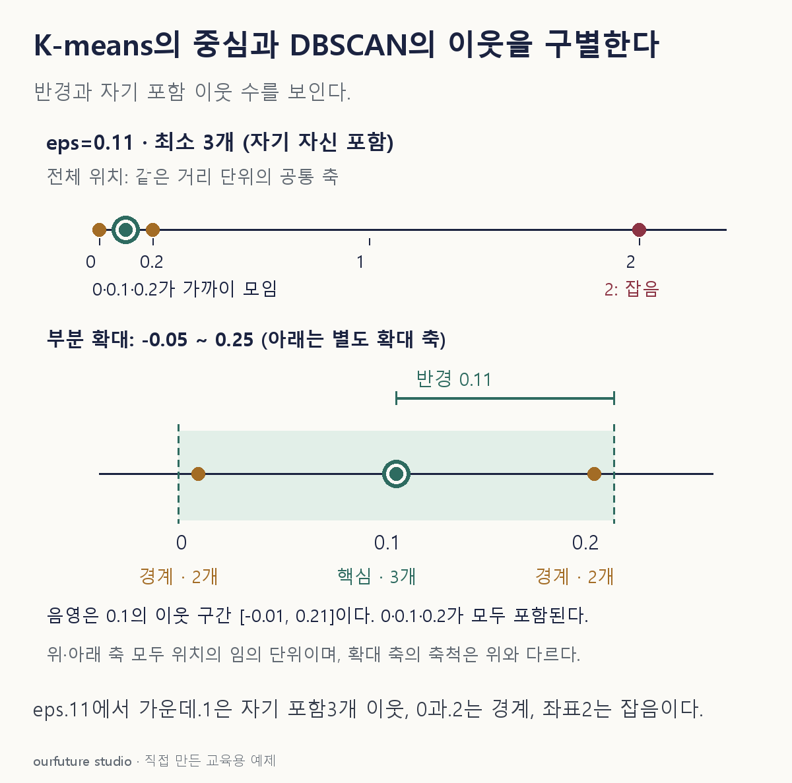

조건을 바꾸며 확인하기
고정1차원 네 점의 역할·잡음 수만 계산한다. 군집 번호와 임의 고차원 전체 DBSCAN을 구현하지 않는다. 경계 거리 비교에는 부동소수점 오차 허용1e−12를 둔다.
설명 그림과 비교하기
아래 그림과 표는 고정된 설명 예제입니다. 기본·변형 중 어떤 조건인지 캡션을 읽고, 바꾼 입력의 결과는 계산 칸에서 확인하세요.

같은 문제를 직접 골라 보기
좌표 0·0.1·0.2·2. DBSCAN eps=0.11, min_samples=3, 자기 자신 포함.
조건을 더 바꾸면?
다른 조건은 같고 min_samples만 1로 바꾸면 잡음은 몇 개인가?
변형 풀이 확인
0개.
모든 점이 자기 자신을 포함해 최소 한 이웃을 갖는 핵심점이 된다. 떨어진 2도 별도 군집을 만든다.
평균 중심인가, 반경 안 이웃 수인가.